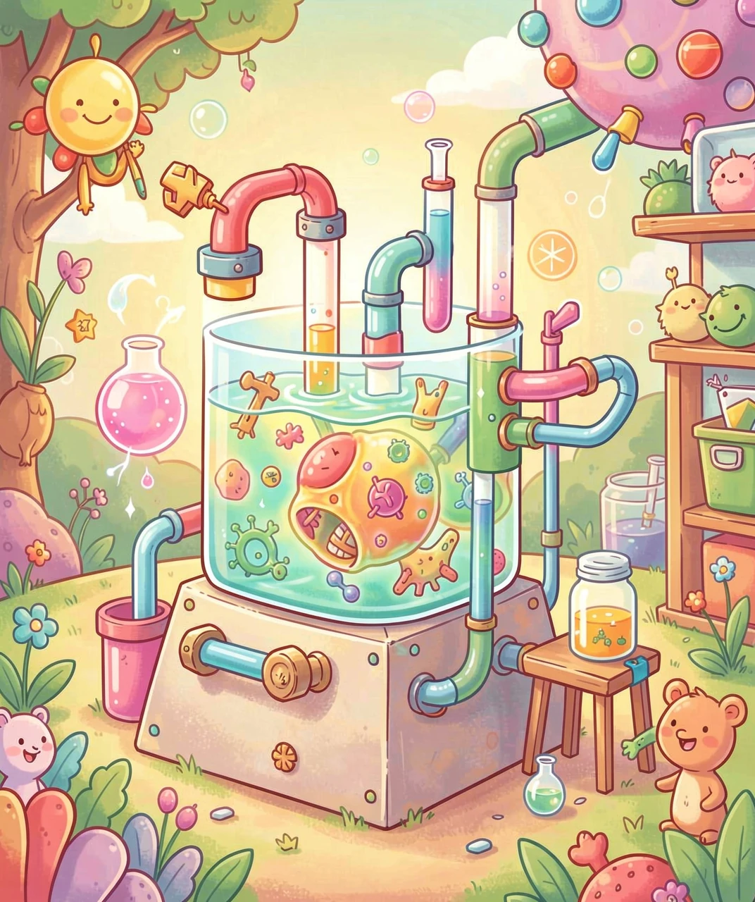
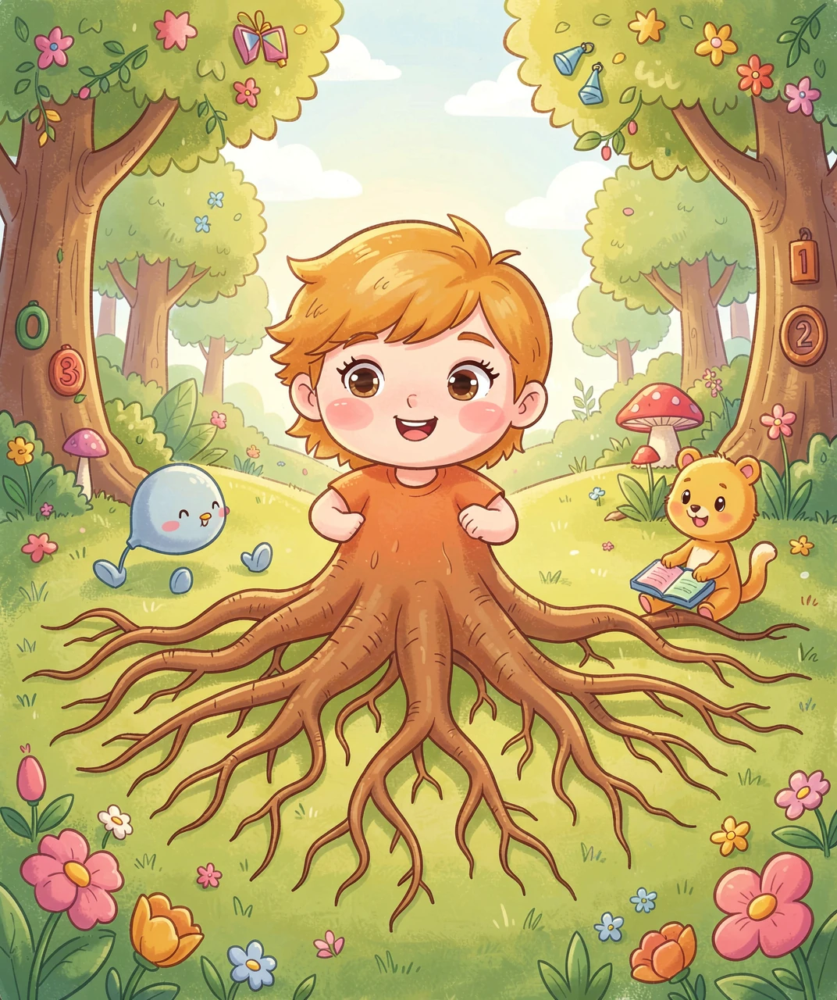
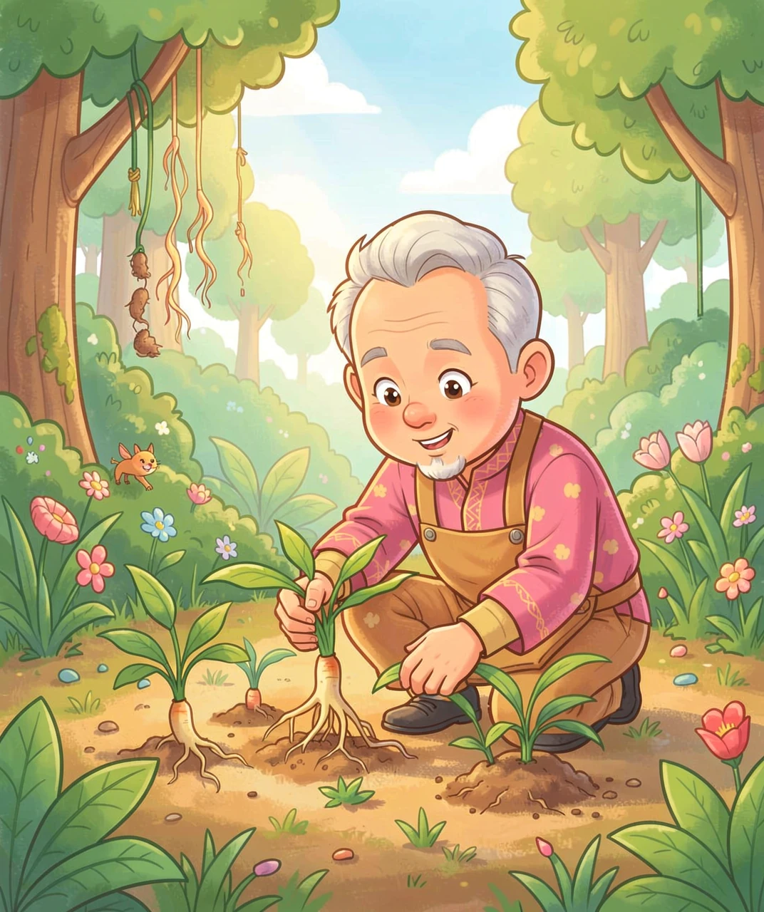
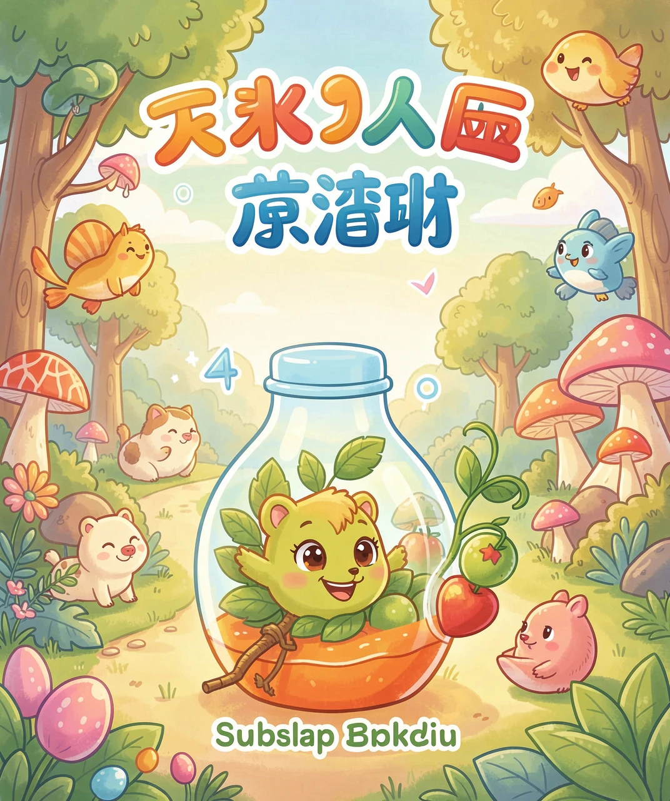

土里长出的「百草之王」
如果让你在森林里找一种会「变身」的植物，你可能会想到会捕虫的猪笼草，或者会「害羞」的含羞草。但有一种植物更厉害——它的根会慢慢长成一个小人的形状，有头、有身子，甚至还有「手」和「脚」。
这种植物就是人参。它的名字就藏着秘密：「参」在这里读作 shēn，意思是像人一样。古人发现，它的根长得特别像一个小人，于是就叫它「人参」——像人一样的参。
人参在中国东北的大森林里生长，已经有几千年的历史。古人把它当成最珍贵的药，称它为「百草之王」，意思是在成千上万种草药里，它是当之无愧的「王」。
大人们常说人参能「补身体」，这是真的吗？要回答这个问题，我们先要搞清楚：身体到底是怎么「累」的。
我们的身体里，有无数个小小的「能量工厂」，它们叫细胞。细胞要不停地工作——心脏要跳、肺要呼吸、大脑要思考——这些都需要「能量」。能量从哪来？来自我们吃进去的饭，还有吸进来的氧气。细胞把食物和氧气「烧」掉，就产生了能量。
但就像烧火会冒烟一样，细胞「烧」能量的过程，也会产生一些「废气」。这些废气会捣乱，让细胞变慢、变累。身体里的废气越多，你就越觉得没力气、想睡觉。
人参的秘密武器，就是它身体里的一类小分子，叫人参皂苷（zào gān）。这些皂苷分子就像一群勤劳的小清洁工，它们钻进细胞里，帮忙把「废气」清走，还让能量工厂转得更快。细胞不累了，人自然就精神了。

人参的根，为什么会变成小人的形状呢？这可不是它故意「表演」，而是它生长环境造成的。
人参住在大森林里，最爱住在又高又陡的山坡上，因为那里的土壤松软、排水好。人参的根往下钻的时候，会遇到石头、树根等各种障碍。它的主根往下长，碰到障碍就拐个弯；而旁边的侧根和须根，就朝四面八方伸出去找养分。久而久之，主根膨大变成「身子」，上面的芽变成「头」，两侧的须根就成了「手」和「脚」。
更有趣的是，人参长得极慢。它不像萝卜，几个月就能长很大。人参每年只长一点点，要长成像样的「小人」，往往要等上十几年，甚至几十年。所以越老的人参，形状越像人，也越珍贵。

你可能听说过，一根好的人参，能卖到几万甚至几十万元！它凭什么这么贵？秘密就在「慢」和「难」两个字里。
先说说「慢」。我们种萝卜，撒下种子几个月就能拔出来吃。可是人参呢？从一粒种子长成一棵能用的参，至少要五六年，好的要十几年。农民伯伯要天天守着它，除草、遮阴、防虫，一年又一年，非常辛苦。时间，就是人参最值钱的「成本」。
再说说「难」。人参特别「娇气」——它怕晒，阳光太强会把叶子晒焦；它怕涝，水一多根就会烂掉；它还特别「挑食」，一块地种过一次人参，要「休息」好多年才能再种。更别说真正的野山参了，那是在深山老林里，靠自己慢慢长出来的，数量极少，采挖又危险，所以珍贵得不得了。

今天的人参，早就不是只有国王和大官才能享用的宝贝了。科学家和农民伯伯一起努力，把野山参变成了可以大规模种植的「园参」，让普通人家也能买到人参。
而且，人参已经不只是拿来熬汤、泡水。它被做成了药片、口服液、糖果、饮料，甚至化妆品！科学家们正在研究人参皂苷，想搞清楚它到底是怎么帮助身体工作的，说不定以后还能用它做出新的药，治好更多的病。
不过要记住，人参虽然是好东西，但也不是吃得越多越好。它就像一位「有脾气的朋友」——身体虚弱时它能帮忙，但身体强壮、或者正在发烧感冒的人吃了，反而会不舒服。所以一定要听医生的话，不能自己乱吃哦！

（答案：B、A、B、B、C。你都答对了吗？）